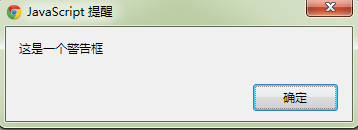
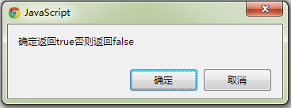
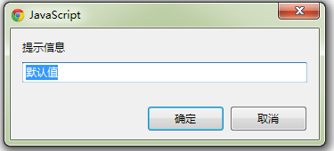

window对象
window对象代表了当前打开的浏览器窗口 对于当前浏览器窗口的window方法调用可省略window. 对于其他浏览器窗口对象的window方法调用需要指明引用
常用事件
window对象的事件常写入 body on...='fun()' 中 window.on...=fun; window.onclik=fun;
| 事件 | 描述 |
| onclik | |
| onload | |
| onunload | |
| onblur | |
| onfocus | |
| onresize | 浏览器窗口大小改变 |
| onerror | 错误处理，但发生javascript错误时 |
| ... |
window常用函数(setInterval...)
| 方法 | 描述 |
| resizeTo(x,y) | 改变浏览器宽高为x,y chrome firefox默认都不支持故不可用 ie支持 |
| resizeBy(x,y) | 浏览器宽高增加x,y chrome firefox默认都不支持故不可用 ie支持 |
| alert(message) | 弹出一个警告框 内容为messges  |
| confirm(message) | 弹出一个内容为message的询问框 选择确定返回true 否则返回false  |
| prompt("提示信息","默认值") | 弹出一个输入框 确定返回输入值 否则返回 null  |
| defaultStatus="this is a test" | defaultStatus属性设置状态栏信息 |
| status="this is a test" | status属性设置状态栏瞬间信息 |
| open(url,name,features,replace) | 新打开一个窗口 返回新窗口的引用 url:新窗口url地址 name:为新窗口去个名字 features:css属性指定窗口特性 replace:bool决定是否允许url替换窗口内容 |
| close | 关闭窗口 |
| scrollBy(x,y) | 滚动文档 scrollBy(50,0)右滚50 scrollBy(-50,0)左滚50 |
| scrollTo(x,y) | 滚动文档到指定位置 scrollTo(1,1)滚动到原点 scrollTo(50,50)滚动到50 50 |
| 超时 | |
| setTimeout("fun()","毫秒") | 设置定时器指定函数延迟执行 返回定时器id |
| clearTimeout(id) | 卸载指定id的延迟定时器 |
| setInterval("fun()","毫秒") | 设置定时器周期性执行函数 返回定时器id |
| clearInterval(id) | 卸载指定id的周期性定时器 |
| ... |